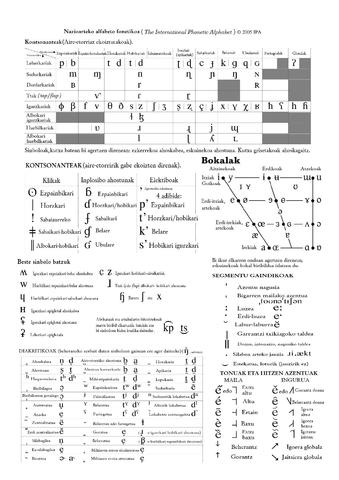

2 Hizkuntzalaritzaz
Hizkuntzaren Didaktika ulertzeko, ezinbestekoa da hizkuntzaren sakonaz eta konplexutasunaz jabetuta egotea. Horretarako, oinarrizkoa da hizkuntzalaritzaren ekarpenetan murgiltzea: hizkuntza sistematikoki aztertzen duen diziplina da, eta bere baitan hainbat azpieremu biltzen ditu (fonetika, fonologia, morfologia, sintaxia, semantika, pragmatika…). Arlo hauek guztiak hizkuntzaren dimentsio anitzak azaltzen dituzte, eta ikuspegi teoriko zein aplikatuak uztartzen dituzte. Beraz, ikasleak kontziente izan behar du hizkuntzaren irakaskuntza ez dela ikuspegi bakar batekin ulertu edo garatu daitekeen zerbait, baizik eta ezagutza askotariko eta konplexu baten gainean eraikitzen dela.
Horrez gain, aurrera egiteko glosategia sortu beharko duzu, pausoz pauso eta zure adibide propioak gehituaz, ertz batzuei buruzko ezagutzak barneratu edo gogoratu ahal izateko.
2.1 Zer da Hizkuntzalaritza?
Hizkuntzalaritza hizkuntzarekin eta harekin lotutako fenomenoekin arduratzen den zientzia da. Hizkuntzak sistema gisa funtzionatzen du, eta sistema horren baitan hainbat azpieremu bereizten dira: soinuak (fonetika eta fonologia), formak eta egiturak (morfosintaxia), hitzen esanahiak (semantika eta pragmatika), eta abar. Diziplina honek hizkuntza modu objektibo eta sistematikoan aztertzea du helburu, haren egitura, erabilera eta garapena hobeto ulertzeko.
Hizkuntzalaritzak ezagutza-esparru zabala hartzen du, eta ikerketa-ikuspegi oso desberdinak biltzen ditu. Batetik, hizkuntzaren barne-egitura aztertzen duten diziplinak daude; bestetik, hizkuntza gizartean, garunean edo historian nola funtzionatzen duen ikertzen dutenak. Horregatik, hizkuntzalaritzaren barruan hainbat adar edo azpiadarrak bereizten dira, bakoitza bere helburu eta metodologiarekin:
| Adarra | Azalpena |
|---|---|
| Hizkuntzen jabekuntza | Gizakiak hizkuntza nola eskuratzen duen aztertzen du, bai lehen hizkuntzaren ikaskuntza (haurrengan), bai bigarren hizkuntzen ikaskuntza. |
| Hizkuntzalaritza antropologikoa | Hizkuntza eta kultura arteko harremana aztertzen du; hizkuntza giza gizartearen adierazpen kultural gisa ikusten du. |
| Soziolinguistika | Hizkuntza eta gizartearen arteko harremana aztertzen du: hizkuntza aldaketa, bariazioa, diglosia, hizkuntza politika, etab. |
| Psikolinguistika | Hizkuntza nola prozesatzen eta ekoizten duen aztertzen du garunean, arreta berezia jarriz hizkuntza ulermenean eta ekoizpenean. |
| Neurolinguistika | Hizkuntzaren prozesamendu neurologikoa aztertzen du, hau da, garunaren egitura eta funtzioek hizkuntzan duten eragina. |
| Hizkuntzalaritza historikoa edo konparatua | Hizkuntzen jatorria, bilakaera eta ahaidetasunak aztertzen ditu, hizkuntza familiak eta aldaketa fonologiko edo gramatikalak barne. |
| Corpusaren hizkuntzalaritza | Hizkuntza aztertzeko testu bilduma handiak (corpusak) erabiltzen ditu, datu errealetan oinarritutako azterketa sistematikoa eginez. |
| Hizkuntzalaritza konputazionala | Hizkuntzaren prozesamendu automatikoa aztertzen du; esaterako, itzulpen automatikoa, hizkuntza ereduen garapena edo hizketa-ezagutza. |
| Hizkuntzalaritza aplikatua | Hizkuntzalaritzako jakintza beste esparru batzuetan aplikatzen du, batez ere hezkuntzan, osasunean edo teknologiaren arloan. |
| Hizkuntzaren didaktika | Hizkuntza nola irakasten eta ikasten den aztertzen du, irakas-metodologiak, ikaskuntza-prozesuak eta testuinguru pedagogikoak kontuan hartuta. |
Hizkuntzalaritzaren aniztasun horrek erakusten du hizkuntza fenomeno konplexua dela, eta haren azterketak ikuspegi anitz eskatzen dituela. Hizkuntzaren Didaktikaren arloan, hizkuntzalaritzaren oinarriak ezagutzea funtsezkoa da, hizkuntza nola ikasten den, nola irakasten den eta zer faktorek eragiten duten ulertzeko. Horregatik, hurrengo atalean, hizkuntza ikasteko prozesuan eragina duten faktore nagusi batzuk aztertuko ditugu
2.1.1 Zer izan behar dugu kontuan hizkuntza bat ikasterakoan?
Hizkuntza bat ikastea ez da prozesu lineala eta mekanikoa; aitzitik, hainbat faktore kognitibo, afektibo eta sozialek eragina dute ikaskuntzaren arrakastan edo zailtasunean. Horien artean, hiru nabarmendu ohi dira: arreta, filtro afektiboa eta kanpoko zein barneko faktoreak. Hauek dira hizkuntzaren jabekuntzan eta didaktikan kontuan hartu beharreko funtsezko eremuak, ikasle bakoitzaren esperientzia eta erritmoa ulertzeko giltzarriak.
Arreta funtsezkoa da hizkuntza prozesatzeko eta esanguratsua den informazioa bereizteko. Hizkuntza-ikaskuntzan, arreta aktiboak ahalbidetzen du hizkuntza-elementuak antzematea, loturak egitea eta ezagutza berria eskuratzea. Askotan, ordea, ikasleak ez dira kontziente jasotzen ari diren mezu guztiez, eta arreta selektiboaren eta prozesamendu automatikoaren arteko oreka garrantzitsua da. Ariketa praktiko batzuek —hala nola ikus-entzunezko esperimentuek— erakusten dute gure arreta mugatua dela, eta horrek hizkuntza-ikas prozesuan dituen ondorioak kontuan hartu behar direla.
Filtro afektiboa, berriz, hizkuntza ikasteko motibazioari eta egoera emozionalei lotutako mekanismo psikologiko bat da. Dulay eta Burt (1977) eta Krashen (1981; 1982) bezalako ikertzaileek garatu zuten kontzeptua, eta azpimarratzen dute faktore emozionalek (motibazioa, antsietatea, autoestimua, segurtasun falta…) zuzenean baldintzatzen dutela ikaskuntza. Filtroa altua denean, ikasleak beldur edo segurtasun faltarekin aritzen dira, eta hizkuntza berria barneratzea zailagoa da. Filtroa baxua denean, berriz, ikaslea lasaiago, irekiago eta arriskuak hartzeko prestago agertzen da, ikaskuntza errazago eta eraginkorrago bihurtuz. Giro positibo eta segurua sortzea, beraz, ezinbestekoa da.
Azkenik, kanpoko eta barneko faktoreek ere eragin nabarmena dute. Kanpoko faktoreen artean daude, adibidez, ikas-ingurunea, irakasleen estilo didaktikoa, edukiaren egokitasuna edo talde-dinamika. Barneko faktoreen artean, berriz, ikaslearen aurreko esperientziak, hizkuntzarekiko jarrera, helburu pertsonalak eta estilo kognitiboak aipa daitezke. Faktore hauek guztiek ikaslearen erritmoa, estrategiak eta motibazioa baldintzatzen dituzte.
Labur esanda, hizkuntza ikasteko prozesuan arreta, faktore emozionalak eta testuingurua kontuan hartzea ezinbestekoa da. Faktore horiek ez dira ikasle bakoitzarengan modu berean agertzen, eta horregatik, irakasleak sentikortasun handiz eta ikuspegi integratzaile batetik aztertu behar ditu. Horrek ahalbidetuko du ikaskuntza-prozesuak eraginkorragoak, esanguratsuagoak eta pertsonalizatuagoak izatea.
2.1.2 Zer da filtro afektiboa?
L2 jabekuntza/ikaste prozesua ulertzeko teoria bat da, eta arrakasta edo hutsegitearekin lotutako aldagai emozionalak azaltzen ditu.
Filtro psikologiko ikustezina da eta L2 jabekuntza/ikaste prozesua erraztu edo oztopatu dezake. Filtro afektiboa altua denean, ikasleak estresa, antsietatea edo konfiantza eza senti ditzake, eta horrek ikaskuntza zaildu dezake. Baxua denean, ikasleak jarrera positiboa erakusten du eta arriskatzeko prest dago, ikaskuntza erraztuz.
Filtro afektiboa kontuan hartuta, zer nolako esperientzia izan duzu beste hizkuntzak ikasterakoan?
Zer egin dezakegu filtro afektiboa txikitzeko?
2.2 Hizkuntzaren atal nagusiak
Hizkuntzalaritzaren arlo nagusiak semantika, pragmatika, morfologia, sintaxia, fonetika eta fonologia dira. Hona hemen bakoitzaren azalpen orokorra eta adibideak.
2.2.1 Semantika eta Pragmatika
Semantika eta pragmatika hizkuntzaren esanahiari heltzen dioten bi azpidisziplinak dira, baina ikuspegi desberdinetatik. Semantikak hitzek, esaldiek eta egiturek duten esanahi sistematikoa aztertzen du, testuingurutik kanpo, hau da, esanahi literala eta gramatikalari erreparatzen dio. Pragmatikak, berriz, hizkuntza testuinguru erreal batean nola erabiltzen den aztertzen du, eta esanahia ulertzeko funtsezkoa den testuinguruaren, aurreikuspenen eta helburu komunikatiboen rola azpimarratzen du. Beraz, bien arteko bereizketa nagusia da semantika esanahi finkoetan oinarritzen dela, eta pragmatika, berriz, esanahiaren erabilera eta interpretazioa ulertzeko testuingurua kontuan hartzen duela.
Semantika: Zeinu linguistikoen esanahiaz arduratzen da. Hitzek duten erreferentziaz eta esanahien arteko erlazioez arduratzen da, baita esanahien aldaketez ere.
Pragmatika: Hizkuntzaren erabilera aztertzen du testuinguru zehatzetan, komunikazio-egoeraren arabera esanahiak nola moldatzen diren kontuan hartuta.
Lagun bat afaltzera gonbidatzen duzu, eta zure lagunak pastel bat hartzen duenean, zure alabak esaten dio:
Pastela jaten baduzu gehiago lodituko zara!
Esaldi horrek esanahi zuzena du (semantika), baina egoera sozialak eraginda, amak uler dezake lagunari lodia dela esan diola (pragmatika).
Zuk horren antzerako adibide bat aurkitu behar duzu, ahal bada bizi izandako zerbait kontatuz (oso ona izan daiteke gurasoei galdetzea).

Bilatu hurrengo kontzeptuen definizioa eta euskarazko adibideak:
- hiponimoa
- hiperonimoa
- sinonimoa
- antonimoa
- homonimoa
2.2.2 Morfologia eta Sintaxia
Morfologia hizkuntzaren azterketa maila formalenetako bat da, eta hitzen barne egitura du aztergai. Zehazki, hitzak nola osatzen diren, zein osagai dituen eta osagai horiek zer esanahi edo funtzio duten aztertzen du. Morfemak, hau da, esanahia duen unitate txikienak, morfologiaren oinarria dira. Morfema batzuk lexikalak dira (erroa, esanahia daramana), eta beste batzuk gramatikalak (kasua, denbora, aspektua, pertsona… markatzen dutenak). Morfologiaren bidez, hitzen forma eta egitura gramatikala ulertzen dugu, eta horrek ahalbidetzen du hizkuntza egoki ekoiztea eta ulertzea. Sintaxia, berriz, hitz horiek nola konbinatzen diren aztertzen du, hau da, sintagmak, perpausak eta esaldi egiturak nola osatzen diren eta zer funtzio duten testuinguruan. Bi mailak elkarri lotuta daude: morfologia hizki mailatik hitzera doa, eta sintaxia hitzetik testura.
2.2.2.1 Morfologiaren adibidea
| Lagunarekin | etorri | nintzen |
|---|---|---|
| Lagun-a-rekin | etor(r)-i | n-in-tze-n |
| Izena-artik.det.-soziatiboa | aditz erroa-aspk. | 1.per-erro.asp-1.per-irg. |
Hitza maila goreneko unitatea da, eta morfema unitate minimoena. Morfema gramatikalak (deklinabidea, artikuluak…) eta morfema lexikalak (erroak) bereizten dira.
Deklinabideak izen-sintagmen kasu gramatikalak markatzen ditu (absolutiboa, partitiboa, ergatiboa, datiboa, eta abar). Kasu bakoitza adibideekin azaltzen da.
Euskararen kasua
Euskararen morfologiak berezitasun nabarmenak ditu: hitza maila goreneko unitatea da, eta morfema unitate minimoena. Morfema gramatikalak funtzio sintaktikoak adierazten dituzte (adib. kasu-markak, artikuluak), eta morfema lexikalak erroaren esanahia.
Deklinabidea da euskararen egitura nagusietako bat, eta izen-sintagmen bidez markatzen dira kasuak.
Kasu gramatikal nagusiak:
- Absolutiboa: Ø — mutil bat dator
- Partitiboa: -rik — ez du dirurik
- Ergatiboa: -k — neskak jan du
- Datiboa: -i — amari eman diot
Leku-denborazko kasuak:
- Inesiboa: -n — etxean
- Leku-genitiboa: -ko/-go — etxeko
- Adlatiboak: -tik, -ra, -rako, -raino, -rantz — etxetik, etxera, etxerako, etxeraino, etxerantz
Beste osagarri batzuk:
- Genitiboa: -en — neskaren
- Instrumentala: -z — gazteleraz
- Soziatiboa: -kin — neskarekin
- Motibatiboa: -(n)gatik — neskagatik
- Destinatiboa: -entzat — neskarentzat
- Amaren etxera noa.
- Atzo ez ginen eskolara etorri.
- Hemen salda dago.
- Medikuarengana joan behar dut.
(Laguntza: IXA demo ; beti ez da zuzena ChatGPT 5, baina ulertzen lagun dezake pazientzia apur batekin)
2.2.2.2 Sintaxia
Maila morfologikoa eta sintaktikoa bereizten dituen ezaugarririk nagusiena ikuspegiaren aldaketan datza: morfologian ikuspegi paradigmatikoa nagusi den bitartean, sintaxian sintagmatikoa da. Morfologian hitza da aztergai nagusia, baina sintaxian, hitzen arteko konbinazioak (kateak, sintagmak, perpausak) aztertzen dira. Azterketa sintaktikoa desanbiguazio morfosintaktikotik hasten da, hau da, hitzek testuinguruan duten funtzioari erreparatzen zaionean. Horren ondoren, osagai sintagmatikoen arteko loturak aztertzen dira. Bai desanbiguazio morfosintaktikoan bai analisi sintaktikoan, erabilitako irizpideen arabera (oinarritutako informazioa, helburuak, etab.) hurbilketa-moduak askotarikoak izan daitezke. Azken batean, sintaxira nola hurbiltzen garen ikuspegiaren araberakoa da, Aduriz et al. (2011) .
Bilatu hurrengo kontzeptuen definizioa eta euskarazko adibideak:
- izen-sintagma
- aditz-sintagma
- ergatiboa
- komunztadura
- perpausa
2.2.3 Fonetika eta Fonologia
Fonologia eta fonetika hizkuntzaren soinuak aztertzen dituzten bi diziplina dira, baina ikuspegi eta helburu desberdinekin. Fonetika hizkuntzaren soinuak fisikoki nola sortzen, transmititzen eta hautematen diren aztertzen du, hau da, soinuaren ekoizpena, akustika eta pertzepzioa ditu aztergai. Fonologiak, berriz, hizkuntza bateko soinuak sistematikoki nola funtzionatzen duten aztertzen du: fonemak identifikatzen ditu eta horien arteko kontrasteak, banaketa ereduak eta funtzio linguistikoa ikertzen ditu. Laburki, fonetikak soinuaren alderdi fisiko eta orokorrak aztertzen dituen bitartean, fonologiak hizkuntza jakin batean soinu horiek nola antolatzen diren eta zer rol duten aztertzen du.
2.2.3.1 Fonologia
Fonemak eta beraien funtzioa aztertzen dituen zientzia. Fonemak unitate linguistiko txikienak dira, ez daukate esanahirik eta abstraktuak dira. Esanahiak bereizteko balio dute: adibidez, kopa eta topa. /k/ eta /t/ ez dute esanahirik, baina bi hitz hauek bereizteko balio dute.
2.2.3.2 Fonetika
Fonetikak soinuak/hotsak eta beraien ekoizpena aztertzen dituen zientzia da. Hau da, soinuak nola eratzen diren eta nola hautematen diren. Hotsak fonemen errepresentazio materialak dira.



Euskararen hotsak
- Bokalak: /a/, /e/, /i/, /o/, /u/, /y/.
- Kontsonanteak: 24 fonema kontsonantiko, sailkatzen dira ahots korden ekintzaren, aho/sudur barrunbearen, ahoskuneen eta ahots moldearen arabera.
Bilatu hurrengo kontzeptuen definizioa eta euskarazko adibideak:
- alofonoa
- fonema
- hiatoa
- azentua
- diptongo
Ariketak
Hurrengo ariketa gehigarria da, kontzeptuak hobeto ulertzera bideratutakoa.
Euskara alderatu beste hizkuntza batekin ezaugarri linguistikoetan oinarrituta.
Sakontzeko bibliografia
Euskaltzaindia. (1987). Euskal Gramatika: Lehen Urratsak (EGLU).
Korta, K. (2001). Begiratu zabala gaur egungo pragmatikari. Gogoa: Euskal Herriko Unibertsitateko hizkuntza, ezagutza, komunikazio eta ekintzari buruzko aldizkaria, 1(2), 195–224.
Hizkuntzalaritzaren azterketak erakusten du hizkuntza ez dela komunikazio-tresna soila, baizik eta sistema konplexua, maila askotariko arauekin eta funtzio sozial, kognitibo eta afektiboekin. Horregatik, hizkuntzaren didaktikan ezinbestekoa da diziplina honek eskaintzen duen ikuspegi zabala kontuan hartzea, ikasleek hizkuntza nola ikasten eta erabiltzen duten modu osoagoan ulertzeko.
Orain arte hizkuntzaren egitura eta dimentsio nagusiak aztertu ditugu ikuspegi teorikotik. Baina galdera garrantzitsu bat zabalik geratzen da: nola ikasten du umeak hizketan? Hurrengo atalean hizkuntzaren jabekuntza prozesuan sakonduko dugu, haurrek lehen urteetatik hizkuntza nola bereganatzen duten eta zein faktorek baldintzatzen duten aztertuz.